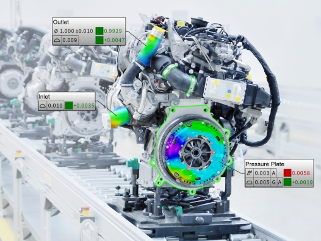

측정, 정렬 및 조립 공정을 지원하는 산업용 계측 소프트웨어

BuildIT Metrology는 Laser Tracker를 활용한 측정, 정렬, 조립 및 품질 검사를 지원하는 산업용 계측 소프트웨어입니다.
대형 설비와 구조물의 위치를 정밀하게 측정하고 CAD 데이터와 비교하여 조립 및 정렬 작업을 지원합니다.
설계 기준과 실제 위치를 비교하여 정밀한 조립 작업을 지원합니다.
조립 단계에서 오차를 조기에 확인하여 불필요한 수정 작업을 줄일 수 있습니다.
측정 및 정렬 업무를 디지털화하여 작업 시간을 단축할 수 있습니다.